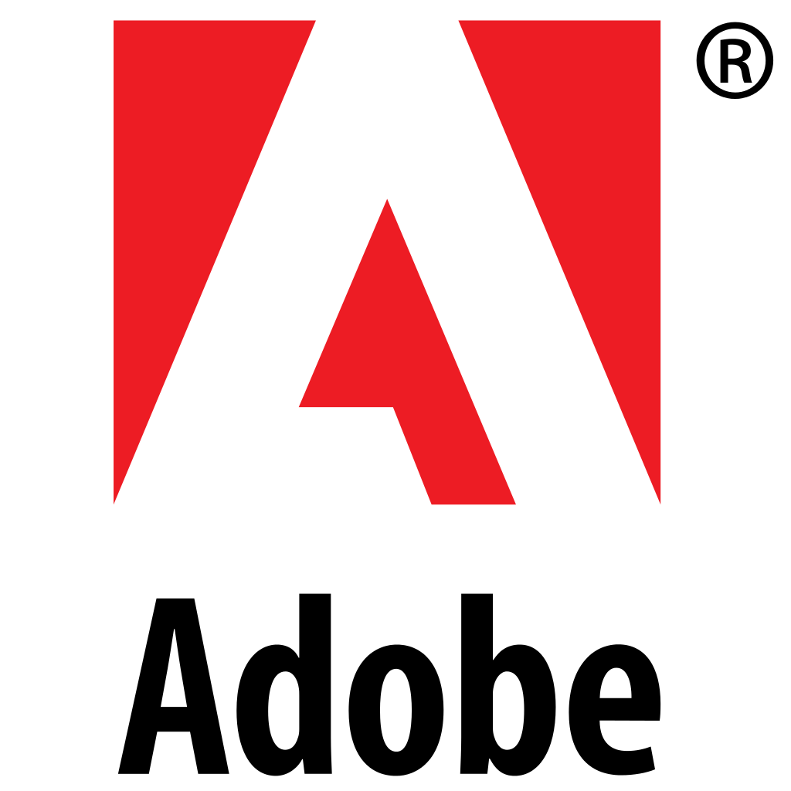

-
1985
Brendan Eich Graduates
History of JavaScript
History of JavaScript
History of JavaScript
-
Brendan gets a job at Sillicon Graphics Int'l
SGI essentially invents the GPU
History of JavaScript
-
A few guys go and create Netscape
- Marc Andreesen (NCSA)
- Jim Clark (SGI)
They initially call it MCom, but have legal issues with Mosaic. So they rebrand as Netscape
History of JavaScript
-
October 13, 1994
Netscape Navigator is released
Netscape's Launch Site
6 months later
April 1995
Brendan Joins Netscape
"Brendan, come to Netscape build Scheme in the browser"
April 1995
- Hired him to the server team, not the client team
- Sun puts pressure on Netscape to add Java to the browser
May 1995
- Brendan is moved to client team
- Faced with the Java fight from Sun
- Helps Netscape decide that Java is not the language of the Web
Why Not Java?
Too Complex
- Constantly running "javac"
- Always get a main method on a Class
- "Not for the casual, amateur programmer"
- Needed something more like VB
- "Meant for people who were learning programming for the first time"
- (this is where automatic semi-colons come from)
10 Days
Brendan starts a new project to build a language for the browser
Does anyone know the code name for this project?
Mocha
- Code name Mocha
- Does anyone know the name used during beta period?
- Does anyone know why they called it LiveScript?
- Netscape had a server platform called "LiveWire"
- Netscape Marketing embraces the "Live" brand
- The goal is to call is JavaScript
LiveScript - Bye Bye
- December 1995
- Sun signs agreement allowing the use of "Java"
- JavaScript is official!!!
JavaScript's First Year
- People are building primative SPAs
- People are discovering the qwerks in the DOM
- People are discovering the good parts of JS
- Danger lurks!!!
Danger Lurks
- Late 1996
- Microsoft complains
- Netscape API changes
- #potkettleblack
- Netscape already fears IE's momentum
- Netscape needs help protecting JS from MS
Protecting JavaScript
- Let's Standardize, so JS doesn't get taken over by MS
- Netscape reaches out to Ecma
- MS doesn't have pull inside Ecma
- June 1997, JS is officially standardized
- Official Scripting API of Ecma
- IBM, Borland, MS, Netscape, Sun, Standford, Others
Life is Good
- 1999, Ecmascript 3
- Went well
- Still have lots of ideas for next release
Pause and Define Ecma
Pause and Define Ecma
- EcmaScript vs JavaScript
- EcmaScript is a language spec
- JavaScript implements that spec/API
- EcmaScript docs won't help you write code
- JavaScript docs will help you write code
What languages implement Ecma Spec?
| Implementation | API Version | |
|---|---|---|
| Browsers | JavaScript | ES5/ES6 |
| Flash/Flex | ActionScript | ES3 + custom |
| Java | Nashorn | ES5.1 |
| Others |
Define "Ecma"
- European Computer Manufacturer Assoc
- Ecma (new + improved)
Ecma's Role
- Help facilitate discussion around changes
- Form a committee for decision making
- What's the name of this committee?
- What does TC stand for?
- Technical Committee
Back To Business
- ES3 in 1999
- More people implementing ES spec
- Browsers becoming more important
- More people getting involved
- Apple, Yahoo, Adobe, HP, lots more
- Managed to get ES 2 and 3 out
BIG GAP
- ES3 in 1999
- ES4 begins in 2006
- No progress in between
- What happened to the progress?
BIG GAP EXPLAINED
- IE Crushes!! Netscape
- 2003 Netscape ends
- "IE Glory Days"
- Let the sandbagging begin
- EcmaScript standards body doesn't have any bite
Who Can Stop IE?
JavaScript 2006
- Talks start for ES4
- Lots of ideas for ES4
- Conflicting ideas
- Implementations have different goals
JavaScript 2006
- Crockford - remove the bad parts
- Eich - have MS work generatively on their JS implementation
- MS - make changes for JScript.NET
- Adobe - Add classes and other Flash/Flex stuff
This Can't End Well
- Let's Meet Our Fighters
On Team ES3.1
- 
On Team ES4
-
Others
ES3.1 vs ES4x
-
Others

ES 3.1 Wins
-
Others
What's the Diff?
-
ES 3.1
- Lighter Changes
- strict mode, remove bad stuff
- No New Syntax
- Crock, MS, Yahoo!, Others
-
ES 4
- Heavier Changes
- Classes, types, much more
- Adobe, Opera, Mozilla
July 2008
- TC39 Meets in Oslo
- Committee agreed to postpone ES4
- Committee agreed to implement ES3.1
- For marketing, rename ES3.1 to ES5
- What next?
August 2008
- Brendan emails the committee
- Committee is working together now, Harmoniously
- All additional features go into master list of features call Harmony
December 3rd, 2009
- ES5 is officially approved
June 2011
- ES5.1 is officially approved
Currently
- TC39 is finalizing ES6
- TC39 is proposing features for ES7
- Browser Vendors are working on implementing ES6
TC39 Goals
-
Better Language
- complex apps
- libraries
- code generators
- Testable Specification
- Adopt de facto standards where possible
TC39 Notes - esdiscuss.org/notes
Harmony or ES.Next or ES6
Harmony or ES.Next or ES6
Harmony or ES.Next or ES6

Harmony or ES.Next or ES6
Harmony or ES.Next or ES6
That's our History Lesson
Questions????